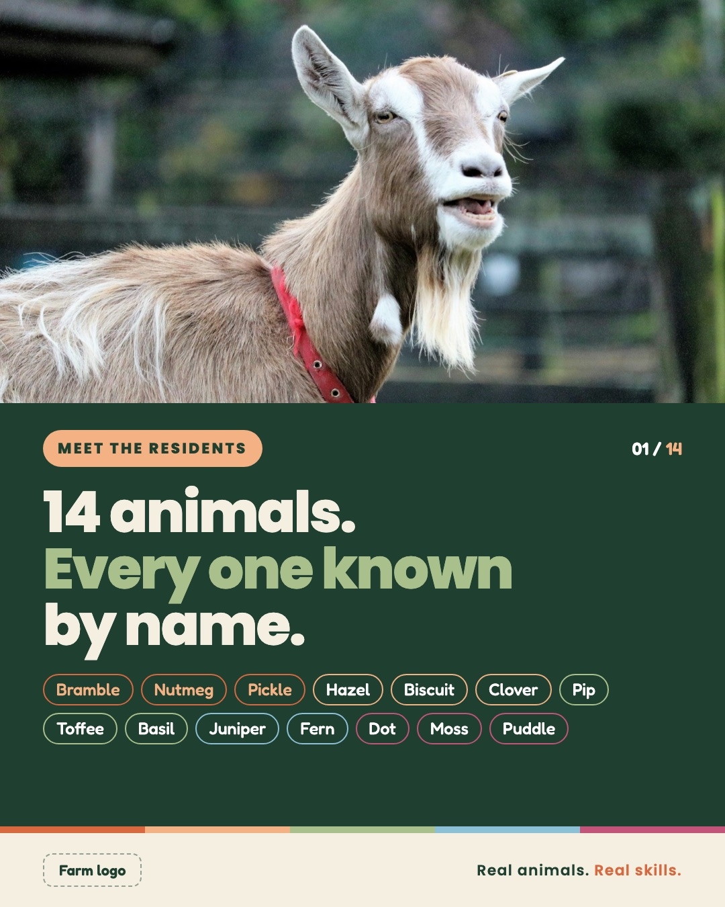
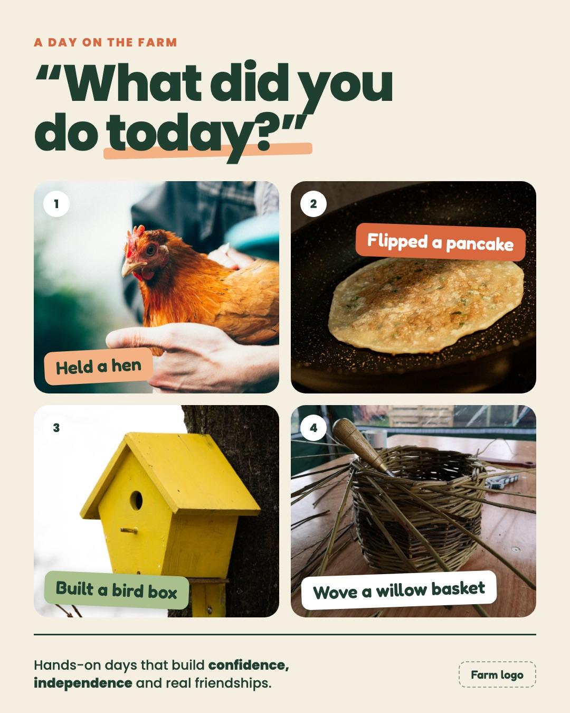

← All work
Case study · Creative task
Social posts for a care farm
Two posts and a short reel for a care farm that offers day activities with animals, built as templates the team can keep using, with a simple plan for what to post each week.
- Client
- A care farm in England Creative task for a job application, not published
- My role
- Social media content Concept, design, captions and reel
- Year
- 2026 Delivered as a PDF, two posts and a video
- Channels
- Instagram and Facebook 4:5 posts and a 12-second reel
This was a task for a job application and the farm has not given permission to show it, so this version has no name, logo or real photos. The animal names are invented, the colours are new, and the photos are free stock images from Unsplash (Angela Newman, Sarah Halliday, C Cai, Carson van Tol and Kerry Nicholson). The ideas, layouts and captions are the ones I sent.
-

Post 01 · Meet the residents
-

Post 02 · What did you do today?
-
Reel · 12 seconds, playing live
The brief
The farm runs day activities with animals, cooking and crafts for adults who need support. They asked for two social media posts using their own photos and brand, to see how I would show what they do.
They already had the hardest thing to fake: real moments with real people and animals. They didn't need more graphics on top. They needed a simple, clear frame around those moments.
The approach
I gave each post one job. Meet the residents is about reach: animals are the most shareable thing the farm has, so it is built to stop the scroll and get comments. What did you do today? is about trust: it shows families, carers and the people who fund places what a day really looks like, and ends with a clear next step, arranging a visit.
I turned the second post into a short reel too, because video reaches far more people than still images.
Key decisions
-
A big photo, text on its own block
In the first post the photo fills the top and the words sit below it, so nothing covers the animal and everything is easy to read. Listing every animal by name, one colour per species, says “these animals are family” without having to explain it.
-
A question every family asks
“What did you do today?” is what parents and carers ask at home time, so it connects straight away. Four photos answer it, each with a rounded sticker label. It feels warm, like a scrapbook, but the grid keeps it tidy.
-
Built to become a series
The “01 / 14” marker turns the first post into the start of a weekly series, one animal at a time. The second can be a regular Friday slot with that week's photos. A question in each caption invites comments, which helps reach.
-
Easy to read for everyone
Large type, strong contrast and plain English, because some of the most important followers are the people who attend. Every post has alt text, and I wrote an Easy Read version of a caption they could read and share themselves.
-
A visual system, not two one-offs
Colours from the brand, a clean bold font for headlines and a rounded, friendly one for labels, in a 4:5 format that fills the feed on both Instagram and Facebook. Swap the photo and the words, and anyone on the team can make a new post in about ten minutes.
Beyond two posts
A plan the team can keep running
-
Four content pillars
Meet the residents, to reach new people. A day on the farm, to build trust. Community, to thank funders, volunteers and partners. Come and see, to explain visits and funding simply.
-
A realistic rhythm
Three posts a week: an animal on Monday, community or behind the scenes on Wednesday, and “What did you do today?” on Friday, as a post or a reel.
-
Measure what matters
One number per pillar: shares and new followers for the animals, clicks to “Arrange a visit” and messages for the day posts, volunteering and donation interest for community. Tracked links show which posts bring enquiries.
-
Consent first
Before publishing any photo of a person, I'd check that consent is in place. That's also why this public version uses only stock photos with no recognisable faces.